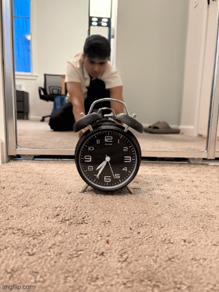

Part 1: Selfie - The Wrong Way vs. The Right Way
This part demonstrates the difference between close-up photography with wide angle versus distant photography with zoom, keeping the subject size constant.
Analysis:
A close-up selfie makes nearby features look bigger and farther ones smaller, causing distortion. A zoomed photo from farther away looks more natural because it reduces this distortion and keeps facial proportions balanced.
Part 2: Architectural Perspective Compression

Analysis:
A zoomed shot looks flatter, making the background seem closer to the subject. A wide-angle close-up exaggerates depth, making near objects look bigger and far ones look farther away. This happens because telephoto lenses compress space, while wide lenses stretch it.
Part 3: The Dolly Zoom (Vertigo Effect)
The classic film technique where the camera moves backward while zooming in, keeping the subject size constant while dramatically changing the background perspective.


Animated Dolly Zoom Sequence
Analysis:
The dolly zoom creates a surreal effect where the main subject remains the same size, but the background appears to stretch or compress dramatically. This happens because as we move the camera back and zoom in, we're changing the perspective relationship between foreground and background elements while maintaining the subject's size in the frame. The result is a disorienting visual effect that has been used in countless films to convey psychological tension or revelation.